기상기사 (2003-08-10 기출문제)
1과목: 기상관측법
1. 고위도 지방(polar regions)에서 상층운 고도를 나타낸 것이다. 가장 적당한 것은?
- 3 ㎞ - 8 ㎞
- 5 ㎞ - 13㎞
- 6 ㎞ - 18 ㎞
- 2 ㎞ - 4 ㎞
(정답률: 알수없음)

2. 강수량에 관한 설명 중 가장 옳다고 생각되는 것은?
- 비,이슬비등 액체상으로 내린양이다.
- 액체상으로 내린양과 눈, 싸락눈, 우박등 고체상으로 내린양을 포함한다.
- 액체상이나 고체상으로 내린양과 이슬이나 서리로 맺힌 양을 포함한다.
- 강수량은 강우량과 적설량의 합계이다.
(정답률: 알수없음)
3. 현지기압(station pressure)이란?
- 관측시 기압계의 시도
- 기차보정, 온도보정, 중력보정을 한 값
- 기차보정, 온도보정, 해면경정을 한 값
- 기차보정, 온도보정, 중력보정 및 해면경정을 한 값
(정답률: 알수없음)
4. 종관 관측소에서 기압관측치의 허용 오차는?
- ± 0.01hPa
- ± 0.⑤hPa
- ± 0.1hPa
- ± 0.5hPa
(정답률: 알수없음)
5. 상대습도라 함은 엄밀히 말할 때 다음 중 어느 것인가?
- 주어진 온도에서 물에 대한 상대습도
- 주어진 온도, 기압에서 물(또는 어름)에 대한 상대 습도
- 주어진 기압, 혼합비에서 물에 대한 상대습도
- 주어진 건구온도, 습구온도에서 물(또는 어름)에 대한 상대습도
(정답률: 알수없음)
6. 다음 증발계에 관한 설명 중 옳지 않은 것은?
- 증발계의 물밑에 먼지와 불순물이 갈아앉아 있을 때에는 물을 교환해야 한다.
- 소형 증발계의 구경은 19㎝, 깊이는 10㎝ 이다.
- 대형 증발계의 검정공차는 기차 ± 0.02㎜ 이내로 되어있다.
- 소형 증발계의 조피망은 야간 또는 강수현상이 있을 때에는 반드시 제거해야 한다.
(정답률: 알수없음)
7. 기상 정찰비행 중 보고하지 않아도 되는 관측요소는?
- 비행기 고도
- 바람
- 시정
- 요란
(정답률: 알수없음)
8. 다음 중 상층풍 관측에 사용되는 관측기기는?
- Radiosonde
- Three - cup Anemometer
- Wind vane
- Pressure - tube Anemometer
(정답률: 알수없음)
9. 비와 안개비를 구별하는 조건 중 가장 근본적인 것은?
- 입자의 직경
- 강수 강도
- 강수량
- 비구름의 종류
(정답률: 알수없음)
10. 항공기상 관측 전문에서 21RERA가 뜻하는 것은?
- 비가 오다 그쳤다.
- 비가 계속 온다.
- 비가 강하게 온다.
- 비가 약하게 온다.
(정답률: 알수없음)
11. 일사량 또는 복사량의 관측에서 차단장치를 설치하였을 경우 다음 중 어느 요소가 관측되는가?
- 직달 일사량
- 수평면 일사량
- 지구 복사량
- 산란 복사량
(정답률: 알수없음)
12. 기상관서에서 시설하는 관측노장의 가장 이상적인 넓이와 모양은?
- 1000m2 정도이고 모양에는 관계 없음
- 600m2 정도이고 정방형
- 300m2 정도이고 원형
- 300m2 정도이고 대체로 4각형
(정답률: 알수없음)
13. 다음 중 대기전상(Electrometeors)이 아닌 것은?
- 세인트 엘모의 불(St.Elmo's fire)
- 번개(Lightning)
- 비숍환(Bishop's ring)
- 천둥(Thunder)
(정답률: 알수없음)
14. 켈빈 온도눈금(Kelvin temperature scale)을 설명한 것 중 옳지 않은 것은?
- 절대온도 눈금(absolute temperature scale)과 같다.
- 빙점과 비등점의 차이는 180K 이다.
- 빙점은 273.16K 이다.
- 비등점은 671.69랭킨(Rankine)도 이다.
(정답률: 알수없음)
15. 관측자가 취하여야 할 사항 중 필수적인 것이 아닌 것은?
- 측기의 유지관리
- 기상요소의 관측순서 결정
- 관측치의 전문화와 송신
- 자기기록계의 기록용지의 교환
(정답률: 알수없음)
16. 상층풍 관측시 유의고도(Significant level)에서 풍향의 정밀도 중 알맞는 것은?
- 1°
- 5°
- 10°
- 50°
(정답률: 알수없음)
17. 그림은 강우계 수수기(水受器)의 모양이다. α 의 각도로 가장 적당한 것은?
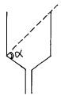
- 45° ≤ α < 60°
- 60° ≤ α < 75°
- 75° ≤ α < 90°
- 90° ≤ α
(정답률: 알수없음)
18. 대형 증발계에 의한 관측방법 중 옳지 않은 것은?
- 수온, 수심, 온도 보정에 의해 증발량을 산출한다.
- 증발계 북측에 수위 측정기와 유리원통을 고정한다.
- 수심은 항상 1m를 유지하도록 한다.
- 동계에는 철거하여 옥내에 보관한다.
(정답률: 알수없음)
19. 조르단 일조계의 자기지 교환에 적당한 시간은?
- 일출후 2시간
- 일몰후 2시간
- 일출전 2시간
- 일몰전 2시간
(정답률: 알수없음)
20. 파이얼 헤리오메타(pyrheliometer)는 무엇을 측정하는데 사용되는가?
- 산란 전천 복사량(diffuse sky radiation)
- 직달 태양 일사량(direct solar radiation)
- 유효 지구 복사량(effective terrestrial radiation)
- 지구 복사량(terrestrial radiation)
(정답률: 알수없음)
2과목: 대기열역학
21. 부력에 의해 단위질량의 기괴가 얻는 에너지는? (여기서 T′과 T는 각각 기괴와 주변 공기의 온도임)
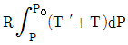
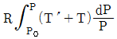
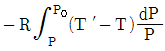
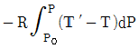
(정답률: 알수없음)
22. 응결전에는 일정한 값을 가지다가 응결한 후에는 그 값이 증가하는 것은?
- 가온도
- 수증기압
- 노점온도
- 온위
(정답률: 알수없음)
23. 보일(Boyle)의 기체에 관한 법칙을 pV = p′V′로 주어지는데 pV와 p′V′는?
- 등온 과정상의 압력과 부피이다.
- 등압 과정상의 압력과 부피이다.
- 등밀도 과정상의 압력과 부피이다.
- 등고도상의 압력과 부피이다.
(정답률: 알수없음)
24. 1,000 hpa 면의 공기가 500 hpa 면의 고도까지 단열적으로 상승하였다. 다음 중 옳은 것은?
- 이 공기의 위치에너지는 증가했으나 엔트로피는 감소했다.
- 이 공기의 위치에너지는 증가했으나 엔트로피는 일정하다.
- 이 공기의 위치에너지와 엔트로피는 모두 증가했다.
- 이 공기의 위치에너지와 엔트로피는 모두 감소했다.
(정답률: 알수없음)
25. 다음 중에서 엔탈피가 가장 큰 상태는?
- 0℃, 1,000hPa, 10m3
- 0℃, 500hPa, 10m3
- 10℃, 1,000hPa, 10m3
- 10℃, 500hPa, 10m3
(정답률: 알수없음)
26. 다음 단열선도 중 종축 B=-RlogP로 잡고 횡축 A=T+KlnP가 되도록 잡은 것은?
- Emagram
- Tephigram
- Stuve diagram
- Skew T-log P diagram
(정답률: 알수없음)
27. 다음 중 일반적으로 대기중의 습도 표시량이 항상 거의 같은 것은?
- 절대습도와 상대습도
- 상대습도와 비습
- 비습과 혼합비
- 혼합비와 절대습도
(정답률: 알수없음)
28. 대기 중에서 어떤 일정 공기덩이의 다음 기온 관측치가 일반적으로 높은 순서로 나열된 것은?
- 기온 ≥ 습구온도 ≥ 노점온도
- 습구온도 ≥ 노점온도 ≥ 기온
- 노점온도 ≥ 기온 ≥ 습구온도
- 기온 ≥ 노점온도 ≥ 습구온도
(정답률: 알수없음)
29. 단열선도에는 기본 등치선이 몇 가지 그려져 있는가?
- 3
- 5
- 7
- 10
(정답률: 알수없음)
30. 다음 중에서 상당온위가 일정한 선은?
- 등온선
- 건조단열선
- 포화단열선
- 등포화혼합비선
(정답률: 알수없음)
31. 다음 4가지 중 단위가 다른 하나는?
- 잠열
- 엔탈피
- 내부에너지
- 비열
(정답률: 알수없음)
32. 수백 m의 두께를 가진 기층이 상승 또는 침강하는 경우에 그 기층이 안정한 상태로 있는가 또는 불안정하게 되는가는 주로 무엇에 의해 결정되는가?
- 기주내의 기압분포상태
- 기주내의 수증기의 분포상태
- 기주내의 불순물의 분포상태
- 기주내의 밀도
(정답률: 알수없음)
33. 열역학선도에서 정의 면적(positive area)보다 부의 면적(negative area)이 넓은 경우는?
- 잠재 불안정
- 조건부 불안정
- 대류 불안정
- 위잠재 불안정
(정답률: 알수없음)
34. 압력을 P, 온도를 T라 할 때 단열과정에서는 TP-k = 일정이다. 여기서 k는? (Cp:정압열용량, Cv:정적열용량, R*:보편기체상수)
- R*/Cp
- R*/Cv
- Cp/Cv
- Cv/Cp
(정답률: 알수없음)
35. 가온도(virtual temperature)
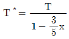
에서 x가 나타내는 양은?- 절대습도
- 상대습도
- 비습
- 혼합비
(정답률: 알수없음)
36. 습윤공기가 불포화상태에 있을 때 건구 온도가 T, 습구 온도가Tw, 노점온도가 Td, 포화온도가 Ts 라 하면, 값이 작은 것부터 큰 쪽으로 차례로 나열한 것은?
- Ts＜Td＜Tw＜T
- Td＜Tw＜Ts＜T
- Td＜Ts＜Tw＜T
- Ts＜Tw＜Td＜T
(정답률: 알수없음)
37. 건조공기의 비기체상수 값은?
- 287 J ㎏-1 K-1
- 8.314 J ㎏-1 K-1
- 28.96 J ㎏-1 K-1
- 0.286 J ㎏-1 K-1
(정답률: 알수없음)
38. 다음 중 가장 안정한 대기는? (단, γ 는 기온감율, Γs 습윤단열감율, Γd 는 건조단 열감율이다.)
- γ<Γs
- Γs<γ<Γd
- γ>Γd
- γ>Γs
(정답률: 알수없음)
39. 다음 중에서 건조대기의 불안정을 바르게 설명한 것은?
- 온도가 연직 방향으로 증가한다.
- 온도가 연직방향으로 건조단열감율 보다 작게 감소한다.
- 온위가 연직 방향으로 증가한다.
- 온위가 연직 방향으로 감소한다.
(정답률: 알수없음)
40. 정압비열 Cp, 정적비열 Cv, 비기체상수 R 사이의 올바른 관계식은?
- Cp = Cv + R
- Cp = Cv - R
- Cp = - Cv + R
- Cp = - Cv - R
(정답률: 알수없음)
3과목: 대기운동학
41. 대류권 중층이상에 나타나는 로스비파(Rossby wave)의 파장이 그 임계파장보다 커질 때 그 파동은?
- 동진한다.
- 정체한다.
- 서진한다.
- 남하한다.
(정답률: 알수없음)
42. 태풍이나 아주 발달한 저기압에 대하여 경도풍과 지균풍의 식으로 풍속을 계산하였다. 다음 중 맞는 것은?
- 경도풍이 지균풍보다 크다.
- 경도풍이 지균풍보다 작다
- 경도풍과 지균풍의 크기는 서로 비슷하다.
- 지균풍이 보다 실제 바람에 가깝다.
(정답률: 알수없음)
43. 중위도 지방 종관규모 운동에서 지균풍과 경도풍의 크기의 차이는?
- 5% 미만
- 10% 정도
- 20% 정도
- 30% 정도
(정답률: 알수없음)
44. 발산은 일정 폐공간에 대해 어떻게 정의할 수 있는가?
- 단위 체적당 유입속도와 유출속도의 차이다.
- 단위 체적당 유입량과 유출량의 차이다.
- 단위 표면적당 유입속도와 유출속도의 차이다.
- 단위 표면적당 유입량과 유출량의 차이다.
(정답률: 알수없음)
45. 지면마찰에 기인한 하층공기의 수렴이 발생하여 그 상단을 통하여 내부 영역의 상대 소용돌이도에 비례하는 연직류가 발생하는 현상을 무엇이라 하는가?
- 상대수렴
- 절대수렴
- 회전수렴
- 에크만수렴
(정답률: 알수없음)
46. 다음의 기본운동방식들 가운데 변형장을 나타내는 식은? (단, u0, v0는 각각 동서, 남북 방향의 속도이며 상수이다.)
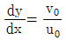
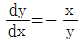
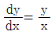
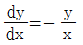
(정답률: 알수없음)
47. 대기 운동을 지배하는 기본적인 물리 법칙이 아닌 것은?
- 질량보존의 법칙
- 운동량 보존의 법칙
- 에너지 보존의 법칙
- 열량보존의 법칙
(정답률: 알수없음)
48. 우주공간상에 위치한 질량 m1으로 인해서 질량 m2인 물체에 작용하는 만유인력은? (단, 물체 m1에서 물체 m2까지의 위치 벡타를
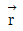
, G는 만유인력 상수이고,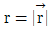
이다.)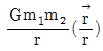
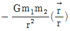
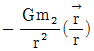
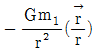
(정답률: 알수없음)
49. 엘니뇨와 관련된 사항 중 맞는 것은?
- 무역풍의 강화와 관련되어있다.
- 서태평양의 수온이 평년보다 증가한다.
- 서태평양에서의 대류활동이 보다 강화된다.
- 엘니뇨시기에는 서태평양의 기압이 높아진다.
(정답률: 알수없음)
50. 지균풍 관계식에 의하면 동일한 기압경도와 공기밀도를 가정할 때 풍속은?
- 위도의 증가에 따라 감소한다.
- 기압의 증가에 따라 증가한다.
- 공기의 점성이 크면 증가한다.
- 고도가 증가함에 따라 증가한다.
(정답률: 알수없음)
51. 관성류(inertial flow)의 설명 중 타당하지 않는 것은?
- 원운동을 하며 이원의 반경을 관성반경이라 한다.
- 북반구에서 항상 고기압성 운동을 한다.
- 주기는 반진자일과 같다.
- 기압경도력과 원심력이 평형을 이룬다.
(정답률: 알수없음)
52. Jet-기류(제트기류)에 대한 설명 중 옳지 않은 것은?
- 겨울철 동서풍속의 최대값이 나타나는 곳은 북반구대륙동안이다.
- 겨울철 동서풍속의 최소값이 나타나는 곳은 북아프리카와 인도 부근이다.
- 겨울철 jet-기류가 위치하는 평균위도는 약 27° N이다.
- 여름철 jet-기류가 위치하는 평균위도는 약 42° N이다.
(정답률: 알수없음)
53. 북반구에서 등압선의 간격이 좁은 곳에서 등압선의 간격이 넓은 곳으로 바람이 불어 갈 때 바람은 어떻게 변하는가?
- 등압선을 횡단하여 고기압쪽으로 바람이 불게 된다.
- 등압선에 평행하게 불게 되나 속도만 줄어든다.
- 등압선을 횡단하여 저기압쪽으로 바람이 향하게 된다.
- 항상 지균풍을 유지해서 분다.
(정답률: 알수없음)
54. 등압면간의 대기층의 두께는 두 등압면사이의 평균온도에 비례하므로 북반구에서 온도풍 방향에 대해 공기의 배치는?
- 위에 찬공기를 아래에 따뜻한 공기를 갖는다.
- 위에 따뜻한 공기를 아래에 찬공기를 갖는다.
- 오른쪽에 찬공기를 왼쪽에 따뜻한 공기를 갖는다.
- 왼쪽에 찬공기를 오른쪽에 따뜻한 공기를 갖는다.
(정답률: 알수없음)
55. 1월의 월평균 지상기압 분포를 설명한 것 중 맞는 것은?
- 호주의 고기압
- 북미 대륙의 저기압
- 아이슬란드의 저기압
- 알류산 열도의 고기압
(정답률: 알수없음)
56. 동서지수(Zonal Index)가 클 때(높을 때) 일어나는 현상을 올바르게 설명한 것은?
- 평균풍속(U)이 크므로 임계파장은 길어지고 단파의 동진속도는 커진다.
- 분리고기압 또는 저기압(cut off high or low)이 발생하기 쉽다.
- 남북교환이 현저하여 북쪽의 공기가 남쪽으로,남쪽의 공기가 북쪽으로 이동한다.
- 기압계의 이동은 거의 정체하고 있다.
(정답률: 알수없음)
57. 비교적 큰 거칠기를 갖는 기하학적인 고도 이하의 층을 무슨 층이라고 하는가?
- 혼합층
- 캐노피층
- 대기경계층
- 내부경계층
(정답률: 알수없음)
58. 준수평운동(Quasi - horizontal motion)의 기술 중에서 틀린 것은?
- 등지오포텐셜 면에 거의 평행하다.
- 대규모 공기의 흐름은 준수평적이다.
- 코리올리힘은 별로 중요하지 않다.
- 공기의 가속도는 무시된다.
(정답률: 알수없음)
59. 대기 난류의 안정도를 나타내는 무차원 수는?
- 로스비 수
- 레이놀즈 수
- 프로우드 수
- 리차드슨 수
(정답률: 알수없음)
60. 대기운동을 물리량으로 표현할 때, 사용되어지는 독립된 성질이 아닌 것은?
- 길이
- 시간
- 온도
- 진동수
(정답률: 알수없음)
4과목: 기후학
61. 강수효율(precipitation effectiveness ratio)에 대한 다음 기술 중 맞는 것은?
- 월 강수량을 월 증발량으로 나눈 비이다.
- 년 강수량에 대한 여름 강수량의 비이다.
- 월 강수량을 월 상대습도로 나눈 비이다.
- 월 강수량을 년 강수량으로 나눈 비이다.
(정답률: 알수없음)
62. 위도가 동일한 대륙에서 겨울에 강우가 비교적 많은 지역은?
- 동안과 내륙사이
- 동안
- 내륙
- 서안
(정답률: 알수없음)
63. W.Kӧppen의 기후 분류에서 온대기후인 것은?
- 초원기후
- 사막기후
- 지중해성기후
- 툰드라기후
(정답률: 알수없음)
64. 다음 각 지역중 기온의 연변화로 최고 최저가 각각 2회 나타나는 곳은?
- 적도지역
- 사막지역
- 다우지역
- 계절풍지역
(정답률: 알수없음)
65. 대륙의 동일 위도상에서 온도의 수평분포의 일반적인 특징에 관한 설명 중 틀린 것은?
- 겨울에 내륙의 등온선은 북상한다.
- 겨울에 대륙 동안이 서안보다 낮다.
- 여름에 대륙 동안이 서안보다 높다.
- 여름에는 해안이 내륙보다 높다.
(정답률: 알수없음)
66. 밀란코비치 이론에 의한 기후변동 요인에 속하지 않은 것은?
- 지축의 기울기 변화
- 지구 궤도의 이심률 변화
- 세차운동
- 태양 흑점의 주기적 활동
(정답률: 알수없음)
67. 해양성 한대 난기단으로 성층이 불안정한 기단은?
- cPks
- cPKu
- mPws
- mPwu
(정답률: 알수없음)
68. 우기가 있는 계절에만 습도가 높게되는 습도의 연변화형 끼리 이어진 것은?
- 대륙성 - 열대성
- 해양성 - 몬순성
- 몬순성 - 열대성
- 열대성 - 해양성
(정답률: 알수없음)
69. 산업혁명 이전의 대기 중 이산화탄소 농도는 대략 어느 정도였는가?
- 230 ∼ 240 ppmv
- 270 ∼ 280 ppmv
- 310 ∼ 320 ppmv
- 350 ∼ 360 ppmv
(정답률: 알수없음)
70. 생물기간(또는 식물기간)이란 일평균 기온이 어느 정도 이상일 때를 말하는가?
- 2℃ 이상
- 5℃ 이상
- 10℃ 이상
- 13℃ 이상
(정답률: 알수없음)
71. 기압을 일정하게 하고 포함된 수증기를 전부 응결시켰다고 가정하였을 때, 그 방출된 응결열 만큼 기온에 가산하여 나타낸 온도는?
- 실효온도(實效溫度)
- 체감온도(體感溫度)
- 상당온도(相當溫度)
- 적산온도(積算溫度)
(정답률: 알수없음)
72. 다음 중 빙권(cryosphere)에 대한 설명 중 옳지 않은 것은?
- 기후 시스템의 한 성분이다.
- 신선한 눈의 알베도는 오래된 눈의 알베도보다 낮다.
- 대기와 해양 순환에 큰 영향을 준다.
- 북극의 해빙은 남극 주변의 해빙보다 평균적으로 두껍다.
(정답률: 알수없음)
73. 유럽 서해안이 같은 위도의 아시아 동해안보다 온화한 기후를 갖는 것은 무엇 때문인가?
- 멕시코 난류
- 무역풍
- 제트기류
- 계절풍
(정답률: 알수없음)
74. 도시기후의 특징을 크게 나타내지 않는 요소는?
- 기온
- 기압
- 일사량
- 강수량
(정답률: 알수없음)
75. 우리 나라의 연평균 소형 증발계를 사용하여 증발량과 강수량을 비교하였다. 다음 중 맞는 것은?
- 강수량은 증발량과 거의 같다.
- 강수량은 증발량의 약 3배이다.
- 강수량은 증발량의 약 5배이다.
- 강수량은 증발량의 약 7배이다.
(정답률: 알수없음)
76. 그림에서 한랭전선과 온난전선을 바르게 표시한 것은?
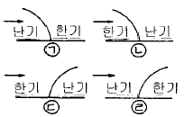
- ㉠, ㉢
- ㉡ ,㉣
- ㉢, ㉡
- ㉣, ㉠
(정답률: 알수없음)
77. 우리나라에 영향을 주는 기단의 특성 가운데 틀린 것은?
- 시베리아기단 : 발원지 - 시베리아대륙 , 한랭건조
- 오호츠크해기단 : 발원지 - 오호츠크해 , 온난다습
- 양자강기단 : 발원지 - 양자강 지역 , 온난건조
- 북태평양기단 : 발원지 - 북태평양 , 고온다습
(정답률: 알수없음)
78. 기단이 형성되기 위한 조건 중 적당하지 않은 것은?
- 거의 같은 성질의 지표면이 넓게 펼쳐진 지역
- 부분적으로 공기의 상승 하강 운동이 왕성한 지역
- 공기가 비교적 장시간 정체해 있는 지역
- 넓은 고기압이 존재하는 지역
(정답률: 알수없음)
79. 다음 안개 중 증발에 의하여 발생하는 것은?
- 복사무(radiating fog)
- 활승무(upslope fog)
- 혼합무(mixing fog)
- 전선무(frontal fog)
(정답률: 알수없음)
80. 다음 중 주기가 가장 긴 변동은?
- intraseasonal oscillation
- interdecadal oscillation
- El Nino
- annual cycle
(정답률: 알수없음)
5과목: 일기분석 및 예보론
81. 등압면 고도를 틀리게 나타낸 것은?
- 850hPa ∼ 1.5㎞
- 700hPa ∼ 4.0㎞
- 500hPa ∼ 5.5㎞
- 300hPa ∼ 9.0㎞
(정답률: 알수없음)
82. 북반구에서 지상의 저기압에 대한 바람의 방향을 옳게 나타낸 것은?
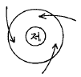
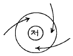
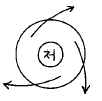
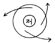
(정답률: 알수없음)
83. 북상 중의 태풍권내에서 강우량이 가장 많은 구역은?
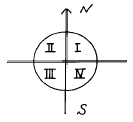
- 제 1상한
- 제 2상한
- 제 3상한
- 제 4상한
(정답률: 알수없음)
84. 700hPa 일기도에서 강한 상승기류가 존재할 때 500hPa일기도 상에서는 다음 중 어느 것을 예상할 수 있는가?
- 정(+)의 와도
- 부(-)의 와도
- 순압대기
- 기압의 능(Ridge)
(정답률: 알수없음)
85. 경도풍(Gradient wind)에 관계하는 힘이 아닌 것은?
- 전향력
- 원심력
- 기압경도력
- 관성력
(정답률: 알수없음)
86. 태풍이 적도 부근에서 잘 발생하지 않은 이유는?
- 기압경도가 크기 때문이다.
- 적도 무풍대이기 때문이다.
- 남서계절풍이 탁월하기 때문이다.
- Coriolis force가 약하기 때문이다.
(정답률: 알수없음)
87. 비행기에 의한 태풍 관통 관측이 일반적으로 행하여지는 고도는?
- 700hPa
- 600hPa
- 500hPa
- 300hPa
(정답률: 알수없음)
88. 북쪽으로 이동하는 기류에 대하여 지구와도(Coriolis'parameter)의 변화를 맞게 기술한 것은?
- 증가한다.
- 감소한다.
- 일정하다.
- 관계가 없다.
(정답률: 알수없음)
89. 기온의 접지역전층이 있을 때 나타나는 현상은?
- 복사안개
- 이류안개
- 대류현상
- 이상투명
(정답률: 알수없음)
90. 온도 이류와 바람의 연직방향으로의 변화와 맞는 사항은?
- 한기이류가 일어나면 바람은 반전(backing)한다.
- 한기이류가 일어나면 바람은 순전(veering)한다.
- 난기이류가 일어나면 바람은 반전(backing)한다.
- 온도이류에 무관하게 바람은 순차적으로 순전한 후, 반전한다.
(정답률: 알수없음)
91. 일반적으로 지상일기도의 전선은 850hPa 일기도의 등온선이 밀집한 곳으로 부터 다음 중 어느 것에 해당하는 곳에 있다고 볼 수 있는가?
- 위도 2 ∼ 3° 북쪽
- 위도 2 ∼ 3° 남쪽
- 위도 10° 정도 북쪽
- 위도 10° 정도 남쪽
(정답률: 알수없음)
92. 기상 현상별 수평 규모와 수명에 관한 설명이다. 올바르지 않은 것은?
- 이동성 고기압과 저기압의 수평 규모는 수 천 km정도로, 수명은 약 20일 정도이다.
- 해륙풍과 같은 국지적 순환의 수평 규모는 약 천 km정도로, 수명은 약 1일 정도이다.
- 집중호우와 같은 중규모 현상의 수평 규모는 약 백 km 정도로, 수명은 수 시간정도이다.
- 뇌우 현상과 같은 소규모 기상현상의 수평 규모는1-10km 정도로, 수명은 약 1시간정도이다.
(정답률: 알수없음)
93. 해무(sea fog)는 다음 중 어느 경우에 나타나는가?
- 온난다습한 공기가 찬 바다위를 지날 때
- 한냉건조한 공기가 찬 바다위를 지날 때
- 온난건조한 공기가 온난한 바다위를 지날 때
- 한냉다습한 공기가 빙결한 바다위를 지날 때
(정답률: 알수없음)
94. 돌풍을 동반하는 것은 보통 어느 전선통과 때 나타나게 되는가?
- 한랭전선
- 온난전선
- 정체전선
- 폐색전선
(정답률: 알수없음)
95. 다음은 등압선 분석의 요령을 설명한 것이다. 적당치 않은 것은?
- 같은 값의 두 등압선은 장거리 평행하도록 그린다.
- 등압선은 서로 교차하지 않는다.
- 등압선은 도중에 둘로 갈라지거나 또는 도중에 끊어지지 않는다.
- 등압선은 반드시 폐곡선이 되든가 아니면 일기도의 연변에서 끝나게 된다.
(정답률: 알수없음)
96. 국제 기상 전보식에서 6RRRtR군의 RRR는 다음 중 어느것을 나타내는 부호인가?
- 기온
- 강수량
- 기압
- 노점온도
(정답률: 알수없음)
97. 단열도상에서 상승응결고도(LCL)는 어떻게 구하는가?
- 지상의 노점온도를 지나는 포화혼합비선과 온도를 지나는 건조단열선이 만나는 점의 고도
- 기온의 상태곡선과 지상기온을 지나는 건조단열선과 만나는 점의 고도
- 지상의 노점온도를 지나는 포화혼합비선과 기온의 상태곡선과 만나는 점의 고도
- 지상의 온도를 지나는 건조단열선과 노점온도를 지나는 습윤단열선이 만나는 점의 고도
(정답률: 알수없음)
98. 국제 기상 전보식 중 지상관측소의 SYNOP전문을 표시하는 MiMiMjMj는?
- AAXX
- BBXX
- CCXX
- DDXX
(정답률: 알수없음)
99. 불포화 공기에서 성립하는 관계식은? (단, Td : 노점온도,Tw : 습구온도,T : 기온)
- Td < Tw < T
- T < Tw < Td
- Td < T < Tw
- Tw < Td < T
(정답률: 알수없음)
100. 저기압성 기류가 고위도쪽으로 이동하면 그 기류의 성질은 어떻게 바뀌는가?
- 저기압성이 강해짐
- 바뀌지 않음
- 저기압성이 약해짐
- 기류의 상승성분이 커짐
(정답률: 알수없음)